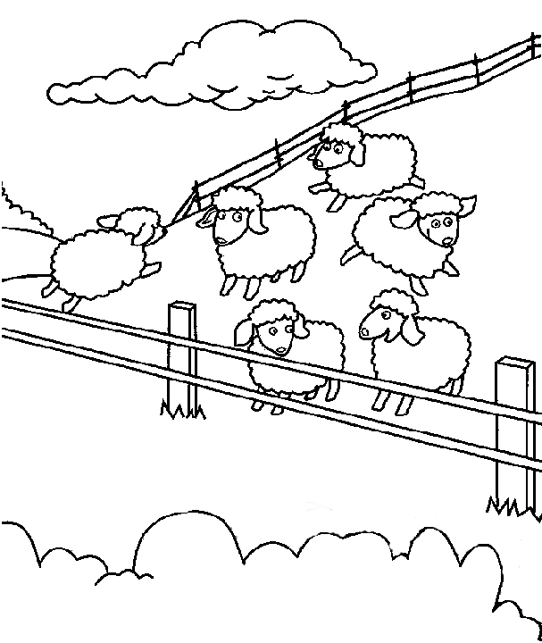

Read the lessons at the Vanderbilt Library website: http://divinity.lib.vanderbilt.edu/lectionary/CEaster/cEaster3.htm
Read
the lessons at the Vanderbilt Library website:
http://divinity.lib.vanderbilt.edu/lectionary/CEaster/cEaster3.htm
Elementary School Pew-work
W I L L W J O H N J W C H
|
(John 21:6-7) He said to them, "Cast the net to the right side of the boat, and you will find some." So they cast it, and now they were not able to haul it in because there were so many fish. {7} That disciple whom Jesus loved said to Peter, "It is the Lord!" When Simon Peter heard that it was the Lord, he put on some clothes, for he was naked, and jumped into the sea. (NRSV) |
Word List |
from www.geocities.com/lectionarypuzzles/ free to distribute for free with this notice. Words are in a straight line left to right or top to bottom |
||
1.
What were the disciples doing on the Sea of
Galilee?
_____________________________________________________________
2.
How many large fish did the disciples
catch?
_____________________________________________________________
3.
What had Jesus been doing on the
beach?
_____________________________________________________________
4.
What did Jesus do with his
breakfast?
_____________________________________________________________
